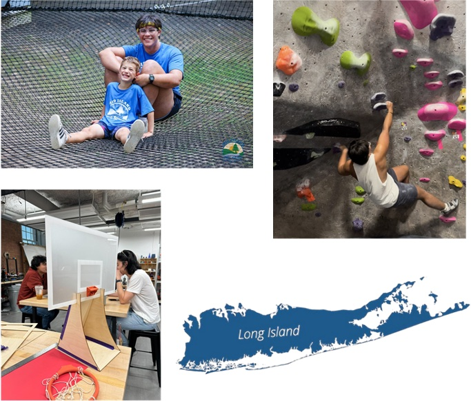
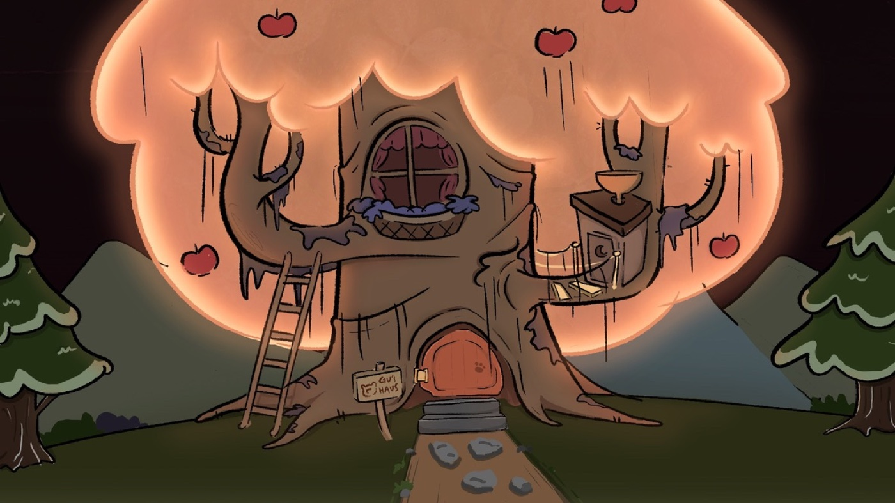
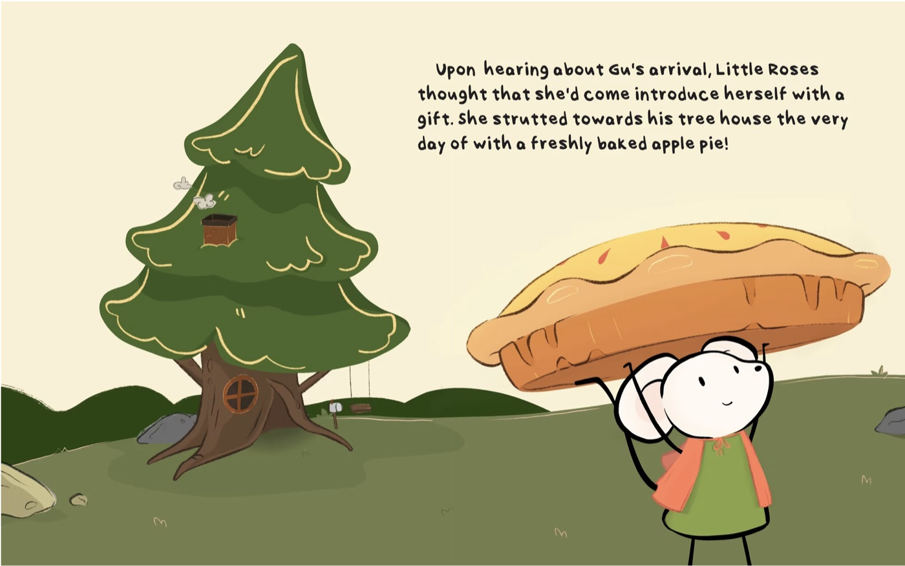

Hands-on making
Harness technology through hands-on making — no fear, and no prior physical making or coding knowledge required.

Class 1 · Week 1 · Fall 2026
Welcome to Intro to Making. Today we meet each other, see how the semester works, and look at what you'll be able to build by December.

Learning outcomes
Harness technology through hands-on making — no fear, and no prior physical making or coding knowledge required.
Develop confidence in concept drawing, hand modeling, 3D printing, laser cutting, electronics, and connected devices.
Know how to collaborate in multidisciplinary teams to design and build working prototypes.
Apply the “build–measure–learn” loop through failing fast and doing rapid iterations.
Discussion
Everyone answers one of these — there are no wrong answers.
Why are you taking this class?
Tell us about something you made that you're proud of.
What would you like to make in this class?
Who should take this class?
Students looking to launch or work in early-stage tech ventures who want to build proof of concepts to vet ideas with customers.
Those interested in exploring ideas, understanding how things work under the covers, and experimenting with new technologies.
Individuals eager to collaborate in cross-functional teams and build real prototypes to test ideas rapidly.
Students drawn to building tangible products to prove early concepts and gain traction for their ideas.
What you'll make
Laser cutting, 3D printing, and electronics — the core maker skills you'll use all semester.


Student projects
Every project is an excuse to build, test, and learn as a team.

Introductions

Instructor
Lecturer in Entrepreneurship, Gordon Institute at Tufts University · Founder, TeachPilot · Advisor, Greenway Institute · ex-Amazon, ex-Accenture.
thomas.van_de_velde@tufts.edu

Teaching assistant
Major: Mechanical Engineering
Class: 2027

Teaching assistant
Major: Computer Science
Class: 2027
Introductions
Mechanical Engineering · Class of 2027

Teaching assistant
Major: Mechanical Engineering
Class: 2027
Office hours
By appointment — ask in class or email alexander.beattie@tufts.edu
Introductions
Computer Science · Class of 2027


Teaching assistant
Major: Computer Science
Class: 2027
Office hours
By appointment — ask in class or email patrice.pinardo@tufts.edu
About your instructor


Course overview
Part 1
60–90 minutes
Break
10–15 minutes
Part 2
60–90 minutes
Individual — make small things · Team — Robot Challenge (first half) and Final Project (second half)
Support
Stuck on something? Ask early — that's what we're here for.
Booking page
Book time with the instructor for help with projects, assignments, or anything else on your mind.
Contact
Email works too. Teaching assistants are available by appointment.
Course overview
Expectations
Key messages
Course outline
Foundation
Project-specific topics
Grading rubric
Team grades are shared by default, but may be adjusted based on individual performance.
Class reflections
What is it?
A structured pause to examine your work, decisions, and learning process — turning experience into insight.
Why it matters
Without reflection, we repeat mistakes and miss growth opportunities.
Do the work
Analyze what happened
Extract insights
Improve next iteration
Key reflection questions
Class tools & resources
And more tools will be introduced throughout the course.
Web-based 2D and 3D design tool for CAD modeling.
3D slicer software that prepares your models for printing.
Development environment for MicroPython on your devices.
Used for software development on devices — a core maker skill.
Your maker kit
The brain of every project you'll build this semester.
Light, distance, motion, and more — to sense the world.
Connect components and prototype circuits quickly.
Motors, LEDs, buttons, resistors, and a ton more…
Makerspace
A makerspace open to everyone at Tufts University — laser cutters, 3D printers, electronics benches, and hands-on help.
nolop.org
Before you go
Then it's time to make something. Next week: ideation and prototyping — we form teams and kick off the Robot Challenge.
Where to find us
Office hours
go.tufts.edu/meet_tvdv
Email
thomas.van_de_velde@tufts.edu
Course materials
tvande08.github.io/ENT-164